# StarCTF Reverse wirteup
赛题 - *CTF (xctf.org.cn)
# Simple File System
观察压缩包各文件
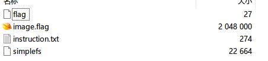
按照 instruction.txt 文件描述打开文件
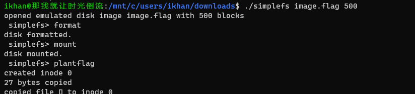
直接拖到 IDA 里面打开通过查找字符串进入主要函数
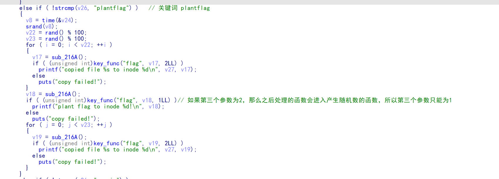
找到关键词 "plantflag", 之后进入 key_func 函数
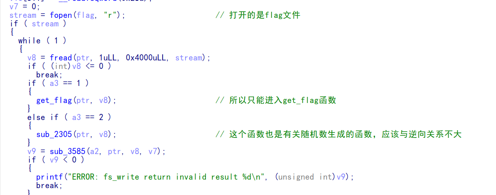
进入 get_flag 函数
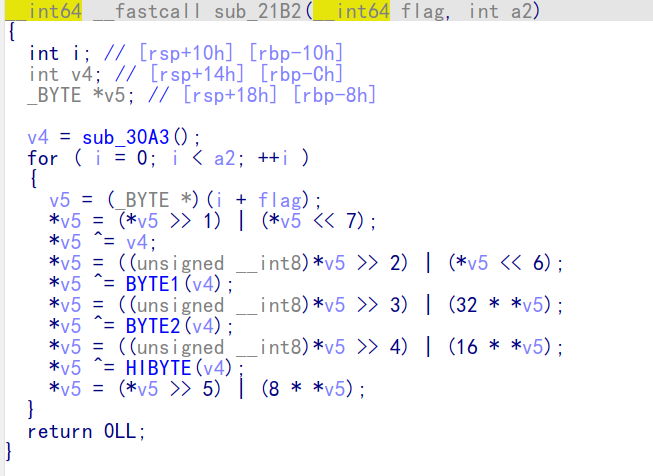
经典的加密函数，但是 v4 的值未知，而且密文也是未知，所以在这里采用动态调试获取
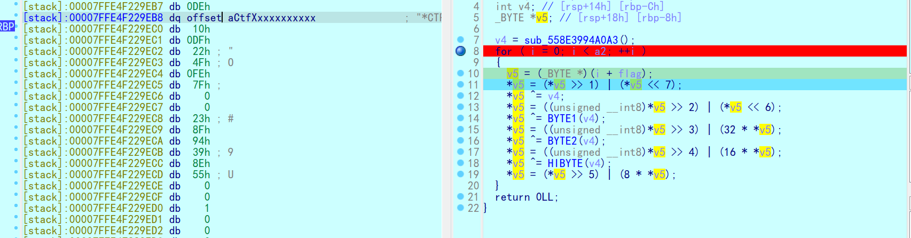
运行之后查看 V5 的值发现是 flag 的格式，所以判定是将读入的值一步步加密，但是最后的密文在哪里呢，附件压缩包中有两个额外文件，打开查看
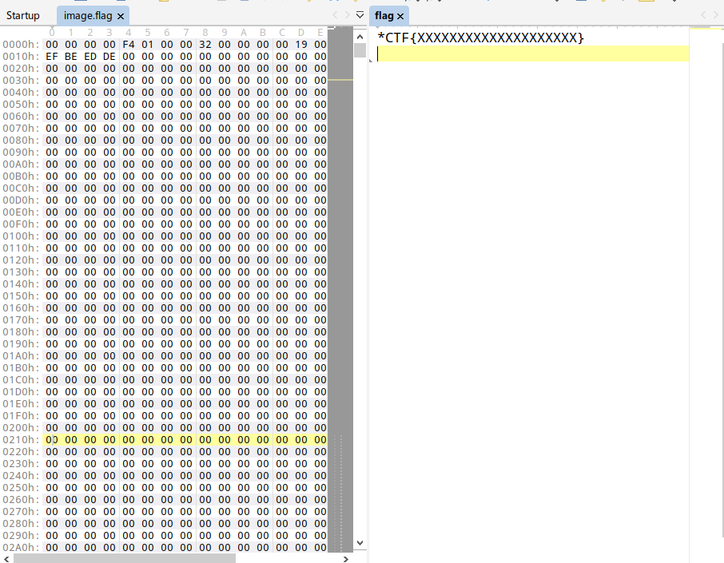
其中一个文件是规定 flag 格式，另一个中有很多字段，继续动态调试执行加密步骤
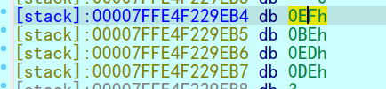
这是 V4 的值
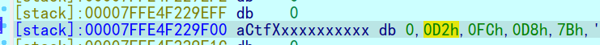
这是加密前几次后出现的前几位密文猜测密文应该是保存在 image.flag 文件中，所以直接在 image.flag 中查找
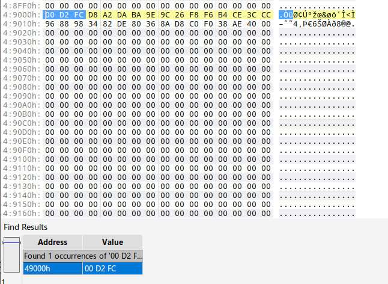
果然查到了密文，将密文剪切出来然后写脚本逆向解密
def decode2(flags): | |
flag = "" | |
for i in range(len(flags)): | |
v5 = flags[i] | |
v5 = (v5>>3)|(v5<<5) &0xff | |
v5 ^= 0xDE | |
v5 = (v5>>4)|(v5<<4) & 0xff | |
v5 ^= 0xED | |
v5 = (v5>>5)|(v5<<3) &0xff | |
v5 ^=0xBE | |
v5 = (v5>>6)|(v5<<2) &0xff | |
v5 ^=0xEF | |
v5 = (v5>>7)|(v5<<1) &0xff | |
flag +=chr(v5) | |
return flag | |
flag1 = open('C:\\Users\\Ikhan\\desktop\\image.flag','rb').read() | |
print(decode2(flag1)) | |
''' | |
*CTF{Gwed9VQpM4Lanf0kEj1oFJR6} | |
''' |
得到最后的 flag
*CTF{Gwed9VQpM4Lanf0kEj1oFJR6}
# NaCl
进入 IDA
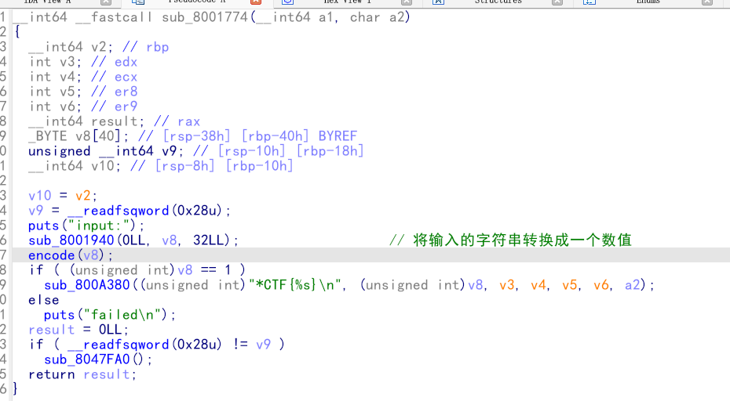
条理很清楚，进入 encode () 函数
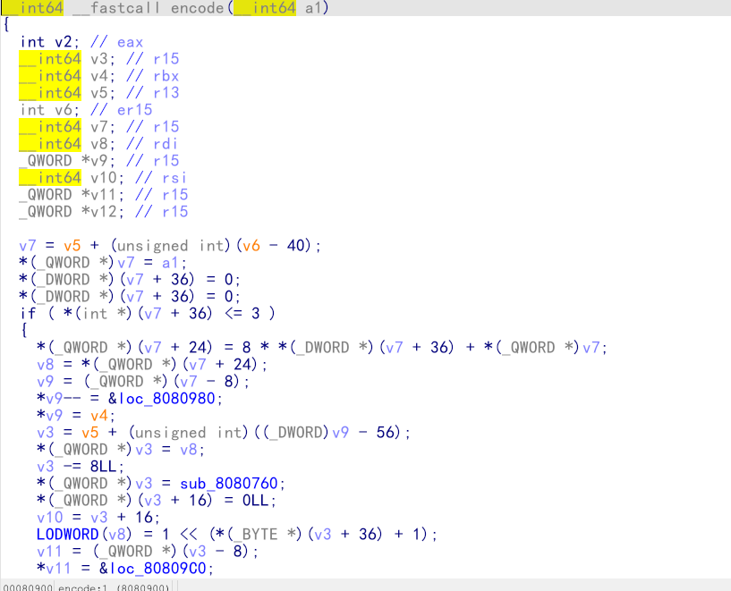
逻辑太混乱了，准备动态调试看看，在 encode () 前面打断点，然后进入
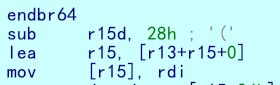
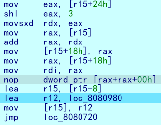
前后发现很反常的事情，不断地对 R15 寄存器进行运算，继续往下看，连续 jmp 了几个地址之后
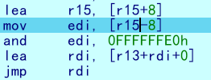
发现是出现了 jmp rdi 的操作
IDA 反汇编遇到 jmp 寄存器 这样的指令可能无法准确地反汇编
btw，网上看了几位大佬的 wp 发现大佬们没去花指令的时候这一步 F5 不了，但是我没去花指令的情况下仍然是给 F5 出来了，但是有点逻辑混乱，可能是因为我的 IDA 版本更高点
继续看关注 R15 寄存器，在 encode () 函数刚开始时执行了
sub R15,28h
紧接着后面跳转的时候又拓展了 R15 附近的区域，将下面要跳转的函数执行完需要执行的地址放入 R15 附近的内存，并且跳转之后
**jmp rdi **
这里 rdi 的取值是从 R15 附近取出来然后再赋给 RDI
所以，这里的 R15 充当的就是栈指针寄存器的作用，与此同时，前面不断地 jmp 地址
就相当于 call，而后面的 jmp rdi 就相当于 retn
这个也算是一种花指令，现在写脚本 patch 源程序。
参考大佬整理的 IDAPython 常用函数
start = 0x807FEC0 | |
end = 0x8080AD1 | |
address = [0 for i in range(5)] | |
callTarget = ["lea", "lea", "mov", "jmp"] | |
retnTarget = ["lea", "mov", "and", "lea", "jmp"] | |
def nop(s, e): | |
while (s < e): | |
patch_byte(s, 0x90) | |
s += 1 | |
def turnCall(s, e, h): | |
# nop 掉 call 之前的值 | |
nop(s, e) | |
patch_byte(e, 0xE8) | |
# 把后面的花指令去掉 重新计算去花长度 | |
huaStart = next_head(e) | |
huaEnd = h | |
nop(huaStart, huaEnd) | |
def turnRetn(s, e): | |
nop(s, e) | |
# 注意原来是 jmp xxx | |
# 所以前面 nop 掉一个 后面改成 retn | |
patch_byte(e, 0x90) | |
patch_byte(e + 1, 0xC3) | |
p = start | |
while p < end: | |
address[0] = p | |
address[1] = next_head(p) | |
address[2] = next_head(address[1]) | |
address[3] = next_head(address[2]) | |
address[4] = next_head(address[3]) | |
for i in range(0, 4): | |
if print_insn_mnem(address[i]) != callTarget[i]: | |
break | |
else: | |
turnCall(address[0], address[3], get_operand_value(address[1], 1)) | |
p = next_head(next_head(address[3])) | |
continue | |
for i in range(0, 5): | |
if print_insn_mnem(address[i]) != retnTarget[i]: | |
break | |
else: | |
turnRetn(address[0], address[4]) | |
p = next_head(next_head(address[4])) | |
continue | |
p = next_head(p) |
patch 之后保存修改后的文件，继续用 IDA 打开。
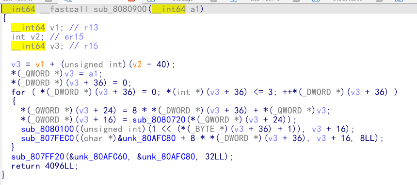
进入 encode () 函数之后，继续创建一个结构体让程序更清楚一点，
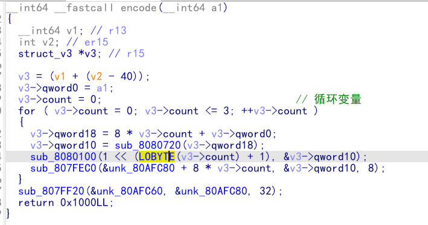
进入主要函数 sub_8080100, 继续创建结构体 (自创结构体)
发现一共结构体一共 48 个字节，就可以看做是 12 个 int 或者 6 个 long，这里创建 12 个 int
然后创建我们的结构体，发现界面会清楚一点，而且很容易看出来是 XTEA 加密
但是经过了魔改，循环的轮数以及 delta 数值也发生了变化
TEA XTEA XXTEA 加密
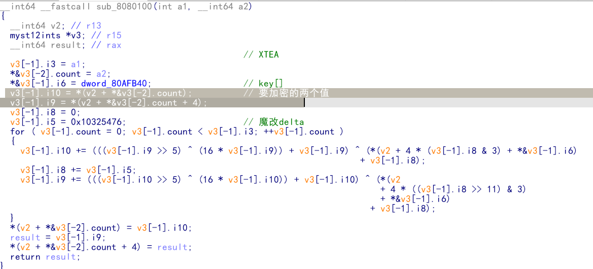
这里取 key 的操作学到了，先按 d 让单个元素的变成 8 位，然后再创建一个包含四个元素的数组，就能创建一个总共 32 位的数组。
还有一个坑是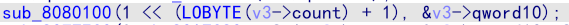
这里传入的 XTEA 每一步的循环的值都是变化的，但是经过计算就能得到循环值分别为 2 4 6 8
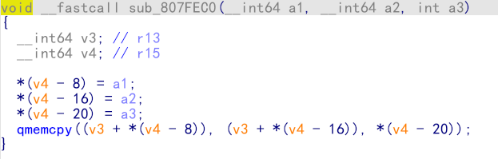
而且 xorkey 是可以通过动调获取的
下一个函数就是简单的 memcpy () 函数，
C 库函数 void *memcpy(void *str1, const void *str2, size_t n) 从存储区 str2 复制 n 个字节到存储区 str1。

__int64 __fastcall XOR(__int64 input) | |
{ | |
__int64 v1; // rbx | |
__int64 v2; // r13 | |
__int64 v3; // r15 | |
_QWORD *v4; // r15 | |
struct_v5 *v5; // r15 | |
int v6; // ebx | |
int v7; // ebx | |
v4 = (v3 - 8); | |
*v4 = v1; | |
v5 = (v2 + (v4 - 56)); | |
v5->input = input; | |
v5->xorKey = sub_8080360(); | |
v5->input1 = *(v2 + v5->input); | |
v5->highFour = Big(HIDWORD(v5->input1)); // 高四位小端序放入 | |
v5->lowFour = Big(v5->input1); // 低四位小端序放入 | |
for ( v5->count = 0; v5->count <= 43; ++v5->count ) | |
{ | |
v5->orgLowFour = v5->lowFour; | |
v6 = ROL(v5->lowFour, 1); | |
v7 = ROL(v5->lowFour, 8) & v6; | |
v5->lowFour = v5->highFour ^ v7 ^ ROL(v5->lowFour, 2) ^ *(v2 + 4 * v5->count + v5->xorKey); | |
v5->highFour = v5->orgLowFour; | |
} | |
v5->input1 = 0LL; | |
v5->input1 = ((v5->input1 | v5->lowFour) << 32) | v5->highFour;// 低高互换 | |
return v5->input1; | |
} |
输入的 input 还要经过一个异或运算，再有结尾的高低 32 位转换
并且，后面是魔改的 XTEA
__int64 __fastcall XTEA(int count, __int64 a2) | |
{ | |
__int64 v2; // r13 | |
myst *v3; // r15 | |
__int64 result; // rax | |
v3[-1].t1 = count; // 轮数为传入的轮数，分别是 2 4 8 16 | |
*&v3[-2].v0 = a2; | |
*&v3[-1].key = key; //key 可以直接拿 | |
v3[-1].v0 = *(v2 + *&v3[-2].v0); | |
v3[-1].v1 = *(v2 + *&v3[-2].v0 + 4); | |
v3[-1].sum = 0; | |
v3[-1].delta = 0x10325476; //delta 数变了 | |
for ( v3[-1].t9 = 0; v3[-1].t9 < v3[-1].t1; ++v3[-1].t9 ) | |
{ | |
v3[-1].v0 += (((v3[-1].v1 >> 5) ^ (16 * v3[-1].v1)) + v3[-1].v1) ^ (*(v2 + 4 * (v3[-1].sum & 3) + *&v3[-1].key) | |
+ v3[-1].sum); | |
v3[-1].sum += v3[-1].delta; | |
v3[-1].v1 += (((v3[-1].v0 >> 5) ^ (16 * v3[-1].v0)) + v3[-1].v0) ^ (*(v2 | |
+ 4 * ((v3[-1].sum >> 11) & 3) | |
+ *&v3[-1].key) | |
+ v3[-1].sum); | |
} | |
*(v2 + *&v3[-2].v0) = v3[-1].v0; | |
result = v3[-1].v1; | |
*(v2 + *&v3[-2].v0 + 4) = result; | |
return result; | |
} |
最后贴出大佬的 wp
#include <stdio.h> | |
#include <stdint.h> | |
#define SHL(x, n) ( ((x) & 0xFFFFFFFF) << n ) | |
#define ROTL(x, n) ( SHL((x), n) | ((x) >> (32 - n)) ) | |
unsigned int xorKey[44] = { | |
0x04050607, 0x00010203, 0x0C0D0E0F, 0x08090A0B, 0xCD3FE81B, 0xD7C45477, 0x9F3E9236, 0x0107F187, | |
0xF993CB81, 0xBF74166C, 0xDA198427, 0x1A05ABFF, 0x9307E5E4, 0xCB8B0E45, 0x306DF7F5, 0xAD300197, | |
0xAA86B056, 0x449263BA, 0x3FA4401B, 0x1E41F917, 0xC6CB1E7D, 0x18EB0D7A, 0xD4EC4800, 0xB486F92B, | |
0x8737F9F3, 0x765E3D25, 0xDB3D3537, 0xEE44552B, 0x11D0C94C, 0x9B605BCB, 0x903B98B3, 0x24C2EEA3, | |
0x896E10A2, 0x2247F0C0, 0xB84E5CAA, 0x8D2C04F0, 0x3BC7842C, 0x1A50D606, 0x49A1917C, 0x7E1CB50C, | |
0xFC27B826, 0x5FDDDFBC, 0xDE0FC404, 0xB2B30907 | |
}; | |
void decipher(unsigned int num_rounds, uint32_t v[2], uint32_t const key[4]) { | |
unsigned int i; | |
uint32_t v0=v[0], v1=v[1], delta = 0x10325476, sum=delta*num_rounds; | |
for (i=0; i < num_rounds; i++) { | |
v1 -= (((v0 << 4) ^ (v0 >> 5)) + v0) ^ (sum + key[(sum >> 11) & 3]); | |
sum -= delta; | |
v0 -= (((v1 << 4) ^ (v1 >> 5)) + v1) ^ (sum + key[(sum & 3)]); | |
} | |
v[0]=v0; v[1]=v1; | |
} | |
void XorRol(uint32_t v[2]) | |
{ | |
uint32_t encLow = v[1]; | |
uint32_t encHigh = v[0]; | |
uint32_t orgLow, orgHigh, v6, v7, v8; | |
int i; | |
for ( i = 43; i >= 0; i-- ) | |
{ | |
orgLow = encHigh; | |
v6 = ROTL(orgLow, 1); | |
v7 = ROTL(orgLow, 8) & v6; | |
v8 = v7 ^ ROTL(orgLow, 2); | |
orgHigh = encLow ^ xorKey[i] ^ v8; | |
encHigh = orgHigh; | |
encLow = orgLow; | |
} | |
v[0] = orgLow; v[1] = orgHigh; | |
} | |
int main() | |
{ | |
uint32_t v[] = { 0xFDF5C266, 0x7A328286, 0xCE944004, 0x5DE08ADC, 0xA6E4BD0A, 0x16CAADDC, 0x13CD6F0C, 0x1A75D936 }; | |
uint32_t k[4] = { 0x03020100, 0x07060504, 0x0B0A0908, 0x0F0E0D0C }; | |
int i, j; | |
uint32_t teaData[8]; | |
// uint32_t testData[] = { 0xD4C2E7AE, 0xD2E28713 }; | |
// XorRol(testData); | |
// printf("0x%X, 0x%X, ", testData[0], testData[1]); | |
for ( i = 0; i <= 3; i++ ) | |
{ | |
decipher(1 << (i + 1), v + i * 2, k); | |
printf("0x%X, 0x%X, ", v[i * 2], v[i * 2 + 1]); | |
teaData[i * 2] = v[i * 2]; | |
teaData[i * 2 + 1] = v[i * 2 + 1]; | |
} | |
puts("\n"); | |
for ( i = 0; i <= 3; i++ ) | |
{ | |
XorRol(teaData + i * 2); | |
// printf("0x%X, 0x%X, ", teaData[i * 2], teaData[i * 2 + 1]); | |
} | |
puts("\n"); | |
unsigned char * t = (unsigned char *)&teaData; | |
for ( i = 0; i < 32; i += 4 ) | |
printf("%c%c%c%c", t[i + 3], t[i + 2], t[i + 1], t[i]); | |
return 0; | |
} |
以及出题人的出题思路
# NaCl writeup
main logic in
src.cthis challenge is likely Google Native NaCl project. It includes jump check, memory check and align check. But I alse replace the stack registers, use r15 to replace rsp, r14 to replace rbp. And here are no call, ret and leave. Here is only jmp. Access memory by adding r13 to get memory address.
Moreover, i put the loader function and the native client binary together. the section SFI is NaCl's code, and SFI_DATA is data section.
expected solution is as follows: firstly, dump section SFI and SFI_data. Then, you modify the binary by script code. you need to recover stack, register and instrcution call, ret, etc. Lastly, you can disassemble the new binary by ida or other tools. Then you can got simple logic.
i am sorry that all players solved this challenge by dynamic debugging and static analysis of orginal assembly code. Because my hide logic code is short. So bad.